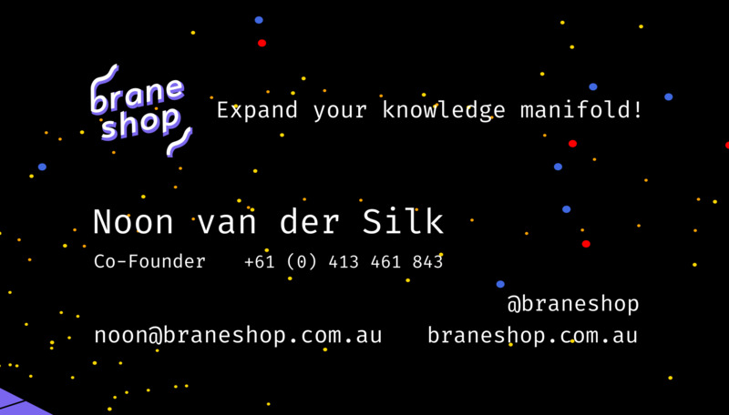

Non-Technical, But Detailed, Explanation of Our Business Card Designs!

An assorted collection of our new business cards!
Our new business cards arrived earlier this week, and since showing them around to a few people and getting some very nice feedback, I thought it might be of interest to talk a bit about how they were made.
In particular I wanted to aim this discussion at people who are not intimately familiar with making graphics on computers.
Let’s get into it!
The Cards
First, let’s take a look at the cards themselves up close:

The Logo
Now, the most obvious thing I want to point out is the awesome logo, designed by the amazing Ren Harris, which we’ve talked about previously
The one adjustment I made for the card was to make the shadow itself multicoloured, which is typically blueish. See here:
If I have any regrets, it’s that I only did this once, so that although every card has a different background, the logo itself is the same. This might change in future versions of the cards.
The Part With The Details
The space background you see on the website, and on the cards, was actually designed by me, in the programming language Haskell.
I was heavily inspired by this image (unfortunately I’m unable to find any details on the original artist by Nelson Gonçalves, thanks to Nathan of Our Community for finding the source!):
I spent some time trying to recreate this image in code; you can find my experiments here. Ultimately, due to strong feedback from various people, I dropped parts of the design that people didn’t like, and settled just on the space part.
The approach I used in code is this:
- In a square grid, place random circles of various colours (red, blue, white) in a random spot,
- In a smaller rectangle, place smaller dots,
- Rotate the image,
- That’s it!
Not too complicated, but it gives a nice simple result, and it’s fun to have the process in code, so that I can generate new ones, and add new features easily, if I decide to do so.
The Colourful Part
This is probably the most interesting part. First, we have to acknowledge Moo whose feature of allowing up to 50 different “backs” allowed us to print this many cards. We printed them on the rounded cotton kind made from old T-shirts.
So, great, Moo was going to let us print up to 50 designs each. All I needed to do was make 50 unique-looking backs.
To do this, I used my favourite flavour-of-the-last-few-years technique, called the “CPPN”. The Wikipedia article isn’t very enlightening, so let’s take a closer look ourselves.
Background: Images on Computers - A Grid of Numbers
So, the first thing we need to understand in order to get a feeling for how these images are generate is how we represent an image on a computer.
Consider the following image:
It illustrates the following idea: We can take a picture, and encode it into the computer using a grid of numbers. Each element of the grid is referred to as a “pixel”.
For the moment, consider that the image we’re working with is black and white.
The process is:
- Build a grid of a certain size (here, our side has 5 columns and 5 rows),
- Put a number \(1\) when the pixel is “on” (coloured in black) and a \(0\) when the pixel is “off” (white).
- That’s it!
We can think of a colour image very similarly. We typically refer to colour images as “RGB” images, where RGB stands for “Red, Green, Blue”. It refers to how much of the given colour is present in the given pixel. By combining different amounts of colour, we can create any colour.
Here’s an indicative image from Wikipedia:
Note that different colours are generated in the overlapping regions. We can think about a colour image version of our smile:
Note this time we have three grids of numbers, one for each colour “channel”. I’ve put the number “1” in the given colour, so it’s a bit easier to see.
To summarise:
- We can represent pictures in computers by collections of “pixels” (grids of numbers)
- The numbers vary between zero (completely off) and one (completely on). This let’s us control what colour is created.
Let’s continue on!
The Idea of a CPPN - Functions Defining Pixels
(Note: I promised this is a non-technical article, but here we get a little bit mathematical and programmatical, because that’s the nature of how we solve this problem. Rest assured, the details of the code you’re about to see aren’t that important; the main thing is the pictures!)
We want to now think about how we can build an image, by thinking about the grid.
Let’s return to our grid. Consider the rows and columns only, for the time being:
I’ve placed and \(x\) at row 3, column 2. Great! But it’s going to be very time-consuming to do this by hand.
Let’s think of a way to compute a given value for a row and column, from just the row and column number themselves!
Here’s an idea — let’s just add the numbers together!
\[ \text{compute_value} (\text{row}, \text{column}) = \text{row} + \text{column} \]
Here’s what this looks like in code:
Using the procedure we learned above, we can interpret this as an image, by dividing every element by \(8\) (the maximum value in the grid) and then considering it as a greyscale image:
Cool! If we increase the number of elements in the grid, making a 500x500 pixel image, we get the following image:
One thing that we can notice in both these pictures is that pixels near each other, are similar in colour. In mathematics, we can describe this as phenomenon by saying that the image is “smooth”. The only reason we care about smoothness is that it makes an image that looks nice. But of course, the above images don’t look particularly interesting in any way.
Interesting images!
Let’s make a few important steps.
Step 1 - Let’s normalise the row number and column nunmber by dividing them by the image size, so that \(r\) and \(c\) will always be between \(0\) and \(1\). This will mean that we can generate images of arbitrary size.
Step 2 - Let’s formalise the thing we’re going to find. It’s going to be a function \(f\), and it’s going to take a row \(r\) and a column \(c\) and it’s going to give us an RGB pixel value, \((r, g, b)\).
\[ f(r, c) = (r,g,b) \]
Once we have this function, we can use it to make our image, by running it for each pixel location, and in this way build a colour image, like so:
So the goal is now: Find a function \(f\) that is much more interesting than just adding together the rows and columns, and implement it!
One option is to do it “by hand”, by picking some collection of mathematical functions. For example, I picked the following definition (just using a few functions you may remember from high-school mathematics; the trigonometric functions “cos”, “sin”, and “tanh”), and made a neat-looking image:
In other words, we did this:
Now, of course, we do neural networks and deep learning here, so can you guess what we’d like to do instead of hand-code the definition of \(f\)?!
Building The Image With a Neural Network!
So, we just swap out our hand-coded function, and put a neural network in it’s place:
If you want the details, then in this picture:
- The first two circles (called “neurons”) are the input numbers, the row number and the column numbers
- The columns of circles are called layers,
- The lines between the circles are random numbers (called “weights”),
- The inner circles are the sum of the values flowing along the lines multiplied by the numbers associated with the lines
- The function at the top is a final function that is applied to each value on each circle
- The last function,
sigmoid, just squishes the values into the range \(0\) to \(1\)
But the important part is our picture (and result!) now looks like so:
Importantly, we note some things:
- The picture is “richer”; i.e. it’s not just a simple gradient.
- We can add parameters to the network, to get new images. For example, we can vary the number of neurons per layer, or the number of layers.
For example, let’s change the number of neurons per layer to 200:
Let’s also change the number of layers to 5
Clearly, we can get different and varied images! Indeed, there’s a rich world to explore here. There are many more parameters that can be added, and many more cool images to be created.
I’ve wrapped up some of the functionality into a library called cppn-cli. It’s not perfect, but I’ve used it a few times. And, of course, I used it to make the business cards!
Conclusion
I hope this was an interesting view into how some of the graphics are designed here at the Braneshop! One big thing I’ve really enjoyed over the last few years of thinking about neural networks and deep learning is the various ways they can be used to make cool pictures.
For me, it seems that there is just endless amounts of time that can be spent this way!
Let me know if you found this fun/interesting, or there is something else you’d like to know more about!